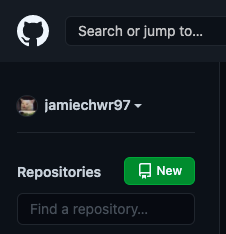
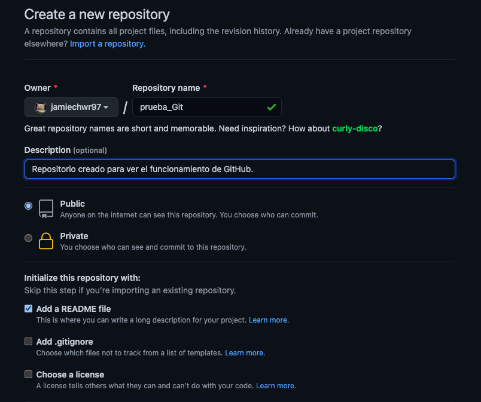
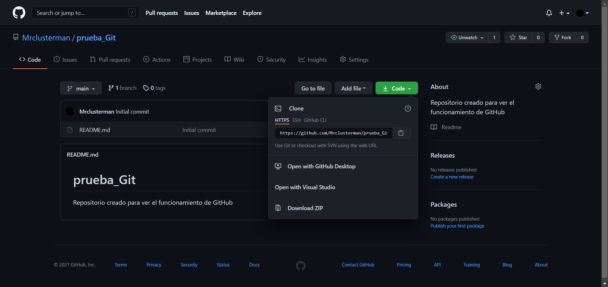
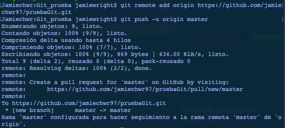
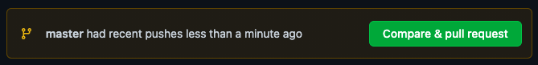
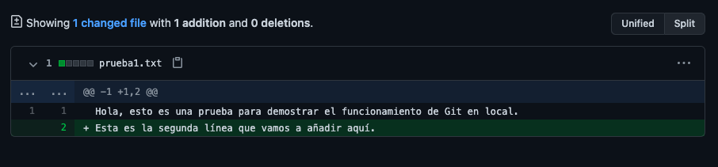
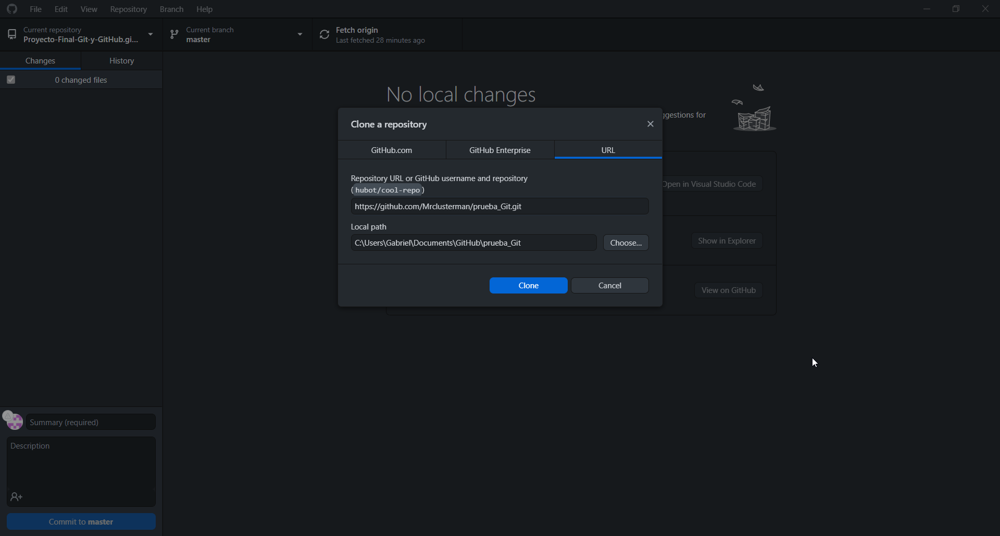
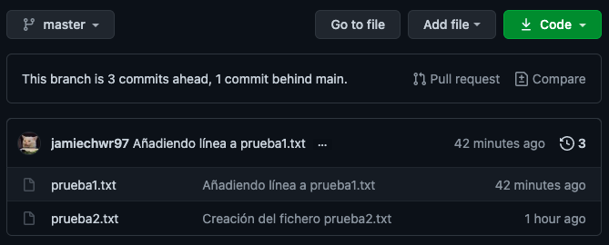

1 / 8

Al utilizar el boton "New" podremos crear un repositorio de forma remota
2 / 8

Al crearlo podremos elejir si sera publico o privado y quien sera el propietario, ademas de la posibilidad de añadir un README file
3 / 8

Gracias a GitHub podremos crear cualquier repositorio que este a nuestro alcance y descargarlo para tener acceso de forma local
4 / 8

Desde la consola de comandos tambien se puede subir repositorios a Github o descargarlos para tenerlos en el ordenador
5 / 8

Una vez realizados los cambios a los archivos del repositorio con el uso de boton Compare and pull se realizarán los cambios en la rama.
6 / 8

Este es un ejemplode como se verían los cambios realizados en los archivos del repositorio
7 / 8

Desde el propio programa de GitHub tambien se podran clonar repositorio, solo necesitas la direccion del repositorio que desees clonar.
8 / 8

Este es un ejemplo de como se veria una rama master en GitHub
❮
❯